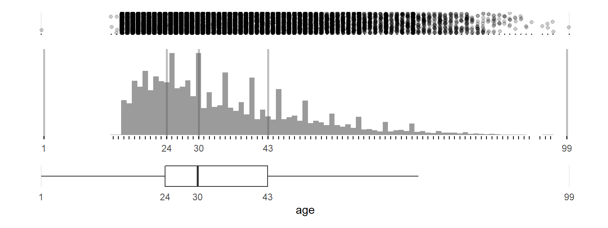

Chapter 7 Multivariate Crash2
This code is a continous by example
7.1 Read data
7.1.1 Load the dataset.
load(here::here("data", "crash2.rda"))
crash2 <- Hmisc::upData(crash2,
labels = c(age = 'Age'),
units = c(age = "years"))## Input object size: 4094896 bytes; 44 variables 20207 observations
## New object size: 4095640 bytes; 44 variables 20207 observations7.1.2 Historgrams
7.2 Age
7.2.1 Continous
## n
## 1 19887## n
## 1 320bigN <- crash2 %>% dplyr::filter(!is.na(sbp) & !is.na(age)) %>% tally()
n_miss <- crash2 %>% dplyr::filter(is.na(sbp) | is.na(age)) %>% tally()
title <-
paste0("Plot of ", Hmisc::label(crash2$age), " and ", Hmisc::label(crash2$sbp))
caption <-
paste0(
"n = ",
bigN,
" subjects displayed.\n",
n_miss,
" subjects with a missing value in at least one of the variables."
)
x_axis <- paste0(Hmisc::label(crash2$age), " [", Hmisc::units(crash2$age), "]")
y_axis <- paste0(Hmisc::label(crash2$sbp), " [", Hmisc::units(crash2$sbp), "]")
p1 <- crash2 %>%
dplyr::filter(!is.na(sbp) & !is.na(age)) %>%
mutate(sbp = as.numeric(sbp),
age = as.numeric(age)) %>%
ggplot(aes(x = sbp, y = age)) +
ylab(x_axis) +
xlab(y_axis) +
labs(
title = title,
caption = caption
) +
geom_point(shape = 16, #size = 0.5,
alpha = 0.5,
color = "firebrick2") +
geom_rug() +
theme_minimal()
p1
7.2.2 Continous2
p1 <- crash2 %>%
filter(!is.na(sbp) & !is.na(age)) %>%
mutate(sbp = as.numeric(sbp),
age = as.numeric(age)) %>%
ggplot(aes(x = sbp, y = age)) +
geom_point(shape = 16, size = 0.5,
alpha = 0.5,
color = "firebrick2") +
geom_rug() +
theme_minimal()
p2 <- crash2 %>%
filter(!is.na(sbp) & !is.na(hr)) %>%
mutate(sbp = as.numeric(sbp),
age = as.numeric(hr)) %>%
ggplot(aes(x = sbp, y = hr)) +
geom_point(shape = 16, size = 0.5,
alpha = 0.5,
color = "firebrick2") +
geom_rug() +
theme_minimal()
p3 <- crash2 %>%
filter(!is.na(sbp) & !is.na(rr)) %>%
mutate(sbp = as.numeric(sbp),
age = as.numeric(rr)) %>%
ggplot(aes(x = sbp, y = rr)) +
geom_point(shape = 16, size = 0.5,
alpha = 0.5,
color = "firebrick2") +
geom_rug() +
theme_minimal()
p4 <- crash2 %>%
filter(!is.na(hr) & !is.na(age)) %>%
mutate(sbp = as.numeric(hr),
age = as.numeric(age)) %>%
ggplot(aes(x = hr, y = age)) +
geom_point(shape = 16, size = 0.5,
alpha = 0.5,
color = "firebrick2") +
geom_rug() +
theme_minimal()7.2.3 Continous3
## Warning: package 'patchwork' was built under R version 3.6.3## Don't know how to automatically pick scale for object of type labelled/integer. Defaulting to continuous.
## Don't know how to automatically pick scale for object of type labelled/integer. Defaulting to continuous.
## Don't know how to automatically pick scale for object of type labelled/integer. Defaulting to continuous.